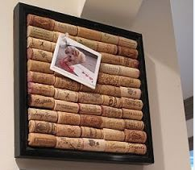
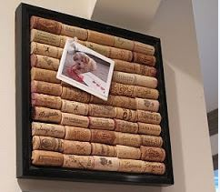

Alla scoperta delle emozioni
Sono ormai famosi come Gioia, Rabbia, Tristezza, Disgusto e Paura. Sono le emozioni di Inside out, il film d’animazione che l’anno scorso ha appassionato grandi e piccini.
Andiamo alla scoperta delle emozioni: quali sono e a cosa servono?
Gioia, Tristezza, Disgusto, Paura e Sorpresa (assente in inside out) sono state riconosciute come le 6 emozioni universali, comuni a tutti gli uomini di tutte le culture. Sono state scoperte osservando le micro-espressioni facciali, ovvero i movimenti involontari dei muscoli nel nostro volto. Per esempio, quando siamo arrabbiati tendiamo ad aggrottare le sopracciglia e ad aprire le narici mentre se siamo disgustati il naso si arriccia e gli occhi si restringono.
Vi sarete resi conto che all’appello mancano tante altre emozioni come ad esempio l’invidia, la gelosia, la vergogna. Queste sono emozioni più complesse che abbiamo sviluppato durante la nostra evoluzione relazionandoci con altre persone.
Le emozioni universali sono state indispensabili per la nostra evoluzione, a partire dalla paura che ci ha allertato dai pericoli preparandoci alla fuga o all’attacco. Grazie al disgusto abbiamo rifiutato di assaggiare dei cibi potenzialmente nocivi e la felicità ci ha portato a ripetere le esperienze piacevoli. E allora perché proviamo tristezza? È molto importante nella rielaborazione degli eventi negativi, come la morte di una persona cara o un forte trauma. Senza la tristezza ci troveremmo a ripetere esperienze negative e traumatiche.
Vuoi saperne di più? Scopri Giocosa..mente, il laboratorio emozionale pensato per i più piccoli.


 
{kind=link}